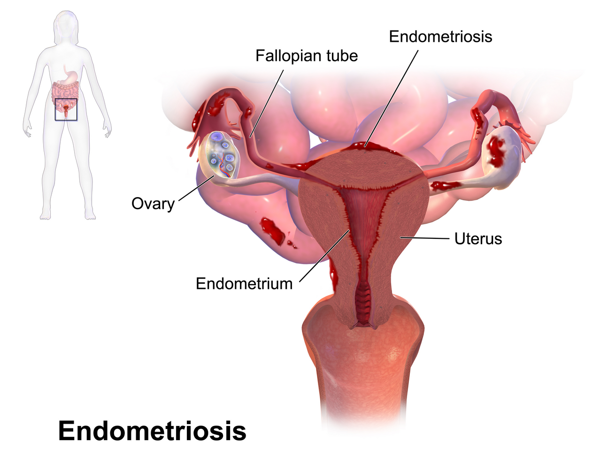

Bi Kịch Y Khoa: "Độ Trễ Chẩn Đoán 7 Đến 10 Năm"
Trong toàn bộ lịch sử y học hiện đại, hiếm có căn bệnh nào phải chịu đựng sự ngó lơ và bình thường hóa xã hội dai dẳng như Lạc Nội Mạc Tử Cung (Endometriosis): - Gần 200 triệu phụ nữ và trẻ em gái trên khắp thế giới đang phải sống chung với căn bệnh này (chiếm khoảng 10% phụ nữ trong độ tuổi sinh sản). - Đáng kinh ngạc là: Thời gian trung bình từ khi một người phụ nữ bắt đầu xuất hiện triệu chứng đau đớn đầu tiên cho đến khi nhận được chẩn đoán xác định chính xác từ y tế kéo dài từ 7 đến 10 năm! - Trong suốt một thập kỷ đó, hầu hết các bệnh nhân đều bị bác sĩ, người thân hoặc bạn bè gạt đi với những lời khuyên thiếu hiểu biết: "Đau bụng kinh ai chẳng bị, phụ nữ là phải chịu đau, lấy chồng sinh con là hết".
Khoa học phụ khoa hiện đại (Zondervan et al., Nature Reviews Disease Primers 2018 và Taylor et al., The New England Journal of Medicine 2020) đã khẳng định: Lạc nội mạc tử cung là một bệnh lý viêm toàn thân nghiêm trọng, phụ thuộc estrogen, có khả năng xâm lấn các cơ quan vùng chậu tương tự như mô khối u lành tính.

Sinh Bệnh Học Phân Tử: Chuyện Gì Đang Xảy Ra Trong Ổ Bụng?
Để hiểu vì sao căn bệnh này gây ra những cơn đau khủng khiếp, hãy nhìn vào cơ chế sinh học: 1. Hiện Tượng Kinh Nguyệt Trào Ngược (Retrograde Menstruation): - Thuyết kinh điển của Bác sĩ John Sampson (1927): Trong kỳ kinh, các mảnh niêm mạc tử cung bong ra không chỉ chảy ra ngoài qua âm đạo mà còn trào ngược qua hai vòi trứng chảy vào khoang phúc mạc ổ bụng. - Hiện tượng trào ngược này xảy ra ở 90% phụ nữ, nhưng ở phụ nữ khỏe mạnh, hệ thống miễn dịch (đại thực bào, tế bào NK) sẽ nhanh chóng dọn sạch các mảnh vụn này. 2. Khiếm Khuyết Miễn Dịch & Xâm Lấn Mô: Ở người mắc Endometriosis, hệ miễn dịch không nhận diện được các tế bào đi lạc. Chúng bám rễ vào bề mặt buồng trứng, phúc mạc, ruột, bàng quang và bắt đầu tăng sinh mạch máu mới. 3. Chảy Máu Trong Một Khoang Kín: - Các ổ mô lạc chỗ này chứa các thụ thể nhạy cảm với Estrogen. Mỗi tháng, khi estrogen tăng lên, chúng cũng dày lên; khi estrogen tụt dốc, chúng cũng chảy máu hệt như niêm mạc trong tử cung! - Nhưng máu kinh trong ổ bụng không có lối thoát ra ngoài. Máu bị giam cầm gây viêm vô trùng dữ dội, hình thành các mô sẹo xơ dính (Fibrotic Adhesions) kéo dính các cơ quan nội tạng lại với nhau (ví dụ: kéo dính tử cung vào trực tràng tạo thành "vùng chậu đông cứng" - Frozen Pelvis).
Bảng Nhận Diện 5 Triệu Chứng Điển Hình (The "5Ds" of Endometriosis)
| Dấu Hiệu Lâm Sàng (The 5 Ds) | Thuật Ngữ Y Khoa | Cơ Chế Bệnh Sinh Trực Tiếp | Mức Độ Nghiêm Trọng |
|---|---|---|---|
| Đau Bụng Kinh Dữ Dội | Dysmenorrhea | Prostaglandin gây viêm cục bộ tại các ổ tổn thương bám trên màng bụng. | Đau quặn thắt khiến ngất xỉu, buồn nôn, thuốc giảm đau NSAIDs vô tác dụng. |
| Đau Rát Khi Quan Hệ Sâu | Dyspareunia | Tổn thương thâm nhiễm vào dây chằng tử cung - cùng và cùng đồ sau (Pouch of Douglas). | Đau buốt nhói thấu xương chậu khi có va chạm cơ học sâu. |
| Đau Khi Đi Đại Tiện | Dyschezia | Mô lạc nội mạc xâm lấn sâu vào vách ngăn âm đạo - trực tràng (Rectovaginal Septum). | Đau buốt như dao cứa khi rặn đại tiện, đặc biệt dữ dội trong những ngày có kinh. |
| Đau Khi Đi Tiểu Tiện | Dysuria | Tổn thương xâm lấn vào thành bàng quang hoặc niệu quản. | Tiểu buốt, tiểu rắt, cảm giác tức nặng bàng quang liên tục trong kỳ kinh. |
| Đau Vùng Chậu Mãn Tính | Diffuse Pelvic Pain | Hiện tượng tăng sinh dây thần kinh cảm giác và quá mẫn trung ương (Central Sensitization). | Đau âm ỉ lưng dưới, đáy chậu và vùng đùi suốt cả tháng kể cả khi sạch kinh. |
Tín Hiệu Trên Thiết Bị Đeo Khi Cơn Viêm Bùng Phát
Ở những phụ nữ mắc Endometriosis, các đợt bùng phát viêm (Endo Flares) để lại dấu vết rất rõ trên các cảm biến sinh trắc học: - Biến Thiên Nhịp Tim Sụp Đổ: Điểm HRV RMSSD rơi tự do xuống đáy sâu trong các đợt đau quặn do hệ thần kinh giao cảm bị kích động liên tục bởi các tín hiệu đau thần kinh. - Thân Nhiệt & Nhịp Tim Nghỉ Ngơi Tăng Cao: Nhịp tim ban đêm RHR có thể tăng thêm 5–10 bpm phản ánh phản ứng viêm toàn thân của các cytokine gây viêm (IL-1β, TNF-α, IL-6) tràn ngập trong dịch ổ bụng.
Giao Thức 4 Bước Chẩn Đoán & Kiểm Soát Chuẩn Mực
- Số Hóa Dữ Liệu Cơn Đau: Sử dụng tính năng ghi log triệu chứng (Symptom Log) trên app để ghi lại chính xác: ngày xuất hiện cơn đau, vị trí đau (bụng, lưng, khi đi vệ sinh), mức độ điểm đau (1–10) và loại thuốc giảm đau đã dùng. Đây là bằng chứng vô giá khi gặp bác sĩ.
- Tìm Kiếm Chuyên Gia Chẩn Đoán Hình Ảnh Chuyên Sâu: Siêu âm bụng thông thường thường bỏ sót 80% các tổn thương lạc nội mạc sâu. Hãy tìm đến các trung tâm phụ sản có chuyên gia thực hiện Siêu âm đầu dò âm đạo chuyên biệt tầm soát lạc nội mạc sâu (Deep Infiltrating Endometriosis - DIE Ultrasound) hoặc chụp cộng hưởng từ MRI vùng chậu có chuẩn bị ruột.
- Tiếp Cận Điều Trị Nội Khoa Bậc 1: Sử dụng các thuốc ức chế rụng trứng và teo mô nội mạc (Progestin đơn thuần liều cao như Dienogest, vòng đặt tử cung chứa Levonorgestrel, hoặc thuốc đối kháng GnRH thế hệ mới).
- Phẫu Thuật Nội Soi Bóc Tách Triệt Để (Laparoscopic Excision): Khi điều trị nội khoa thất bại hoặc tổn thương chèn ép niệu quản, ruột: phẫu thuật nội soi bóc tách tận gốc tổn thương (Excision Surgery) do các bác sĩ phẫu thuật chuyên khoa sâu thực hiện là tiêu chuẩn vàng để phục hồi giải phẫu và bảo tồn khả năng sinh sản.
Nguồn Y Khoa Lâm Sàng & Tài Liệu Tham Khảo
- Zondervan, K. T., et al. (2018). Endometriosis. Nature Reviews Disease Primers, 4(1), 9. PMID: 30026507
- Taylor, H. S., et al. (2020). Endometriosis is a chronic systemic disease: clinical challenges and novel innovations. The Lancet, 397(10276), 839-852.
- Becker, C. M., et al. (2022). ESHRE guideline: endometriosis. Human Reproduction Open, 2022(2), hoac009. PMID: 35350473
- WHOOP & Apple HealthKit Pelvic Symptom Algorithms (2025). Inflammatory Flares & Dysmenorrhea Biomarker Tracking.